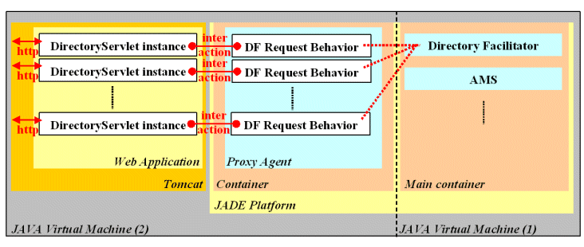

Configuration used: Sun JDK 1.4 , Java Web Services Developer Pack 1.1, JADE 3.0b1
Sources are in the ‘sources’ directory; the javadoc is in the ‘doc’ directory; the web application files are in the ‘web’ directory; the built application is in the ‘build’ directory and the packages are in the ‘dist’ directory.
The
little example developed here relies on a Servlet called
DirectoryServlet which answers any HTTP requests by providing the list
of the agents advertising services with the DF of the local JADE
platform. Therefore we suppose that before running the Tomcat server, a
default JADE platform has been started on the same host, port 1099, with
a main container. As shown in figure 1, each instance of the servlet
respond to an HTTP Request and is linked to a behavior of the Proxy
Agent in charge of handling the request ; each
instance of the behavior connect to the DF, retrieves the list of
advertised agents, and provide a Web page as a response. In this
architecture the multithreaded Servlet Server is mirrored by a
multi-behavior Proxy Agent, allowing the handling of multiple requests
in parallel and further customization of the behaviors to handle
different types of requests in different ways.

Figure 1. Architecture
| (1) |
public class
DirectoryServlet extends HttpServlet { private static Agent theProxyAgent = null; |
| (2) |
synchronized private
static void SyncInit() { // Have the proxy agent and its container already been initialized? if (theProxyAgent==null) { // Create a new non-main container Runtime l_JADERunTime = Runtime.instance(); Profile l_JADEProfile = new ProfileImpl(); AgentContainer l_NewContainer = l_JADERunTime.createAgentContainer(l_JADEProfile); try { // Create the object used to synchronize the starting of the Servlet and the Proxy agent Object l_Arg[] = new Object[1]; Synchronizer l_Sync = new Synchronizer(); l_Arg[0] = l_Sync; // Create the Proxy Agent and pass it the synchronizing object as argument theProxyAgent = (Agent)l_NewContainer.createNewAgent("ProxyAgent", ProxyAgent.class.getName(),l_Arg); // Start the Proxy Agent theProxyAgent.start(); // Wait for synchronization signal l_Sync.waitOn(); } catch(Exception l_Exception) { l_Exception.printStackTrace(); } } } public void init() throws ServletException { SyncInit(); } |
| (3) |
public void doGet
(HttpServletRequest p_Request, HttpServletResponse p_Response) throws ServletException, IOException { // Create an interaction object wrapping the HTTP request and response Interaction l_Interac = new Interaction(p_Request,p_Response); // Pass the interaction to the Proxy Agent and wait for the signal that the interaction was updated try { theProxyAgent.putO2AObject(l_Interac, Agent.ASYNC); l_Interac.waitChangedResponse(); } catch(Exception l_Exception) { l_Exception.printStackTrace(); } } } |
| Figure 2. Code of the servlet |
|
TheSynchronizer in figure 3 is fairly simple: it stores the initialization state of the Proxy Agent in a boolean (1) provides a method to wait for the state to be ‘Started’ (2) and a method to signal the agent started (3).
| (1) |
public class Synchronizer { private boolean Started = false; |
| (2) |
synchronized void waitOn() { try { while(!Started) wait();} catch (InterruptedException l_InterruptedException) { l_InterruptedException.printStackTrace(); } } |
| (3) |
synchronized void Started() { Started = true; notifyAll(); } } |
| Figure 3. Code of the Synchronizer | |
The Interaction class in figure 4, is
somehow similar to the Synchronizer: it stores an HTTP request and its
response and a flag indicating any update in the response (1). It provides the corresponding
constructor and accessors (2) as
well as two methods (3) to
respectively wait for any update in the response and signal the update
of the response.
| (1) |
public class Interaction { private HttpServletRequest theRequest = null; private HttpServletResponse theResponse = null; private boolean theResponseChangeFlag = false; |
| (2) |
public Interaction (HttpServletRequest
p_Request, HttpServletResponse p_Response) { theRequest = p_Request; theResponse = p_Response; } synchronized HttpServletResponse getResponse() { return (theResponse); } synchronized HttpServletRequest getRequest() { return (theRequest); } |
| (3) |
synchronized void waitChangedResponse() { boolean l_Flag = theResponseChangeFlag; try { while(l_Flag==theResponseChangeFlag) wait();} catch (InterruptedException l_InterruptedException) { l_InterruptedException.printStackTrace(); } } synchronized void setResponseChanged() { theResponseChangeFlag = !theResponseChangeFlag; this.notifyAll(); } } |
| Figure 4. Code of the Interaction | |
| (1) |
public
class ProxyAgent extends Agent { public void setup() { // Accept objects through the object-to-agent communication channel, with a maximum size of 100 queued objects this.setEnabledO2ACommunication(true, 100); |
| (2) |
// Add a cyclic
behaviour checking the queue of objects this.addBehaviour(new CyclicBehaviour() { public void action() { Object l_Obj = getO2AObject(); if(l_Obj != null) { // We have an object and we know for sure it is an Interaction // here the only interaction handle is the request for the directory // thus one behavior is created to fulfil this request myAgent.addBehaviour(new GetDFList(myAgent,(Interaction)l_Obj)); } else block(); } }); |
| (3) |
// Register
the Proxy Agent with the DF so that there is at least one registered
agent DFAgentDescription l_AgentDescription = new DFAgentDescription(); l_AgentDescription.setName(this.getAID()); ServiceDescription l_ServiceDescription = new ServiceDescription(); l_ServiceDescription.setName("HTTP-proxy-agent"); l_ServiceDescription.setType("proxy"); l_ServiceDescription.addProtocols(FIPANames.InteractionProtocol.FIPA_REQUEST); l_ServiceDescription.addOntologies("HTTP-ontology"); l_ServiceDescription.setOwnership("Carnegie Mellon University"); l_AgentDescription.addServices(l_ServiceDescription); try { DFService.register(this,l_AgentDescription); } catch(FIPAException l_ex) {l_ex.printStackTrace(); } // Notify the Servlet that the Proxy Agent is ready Object[] l_Args = getArguments(); Synchronizer l_Sync = (Synchronizer) (l_Args[0]); l_Sync.Started(); } |
| (4) |
class GetDFList extends OneShotBehaviour { Interaction myInteraction = null; public GetDFList(Agent p_Agent, Interaction p_Interaction) { super(p_Agent); myInteraction = p_Interaction; } public void action() { try { //retrieve list of all registered agents DFAgentDescription[] l_Result = DFService.search(myAgent, new DFAgentDescription()); // write the list of AID in the HTTP response PrintWriter l_Out = myInteraction.getResponse().getWriter(); l_Out.println("<HTML><BODY>"); if (l_Result!=null && l_Result.length>0) { l_Out.println("List of registered agents:<BR />"); for(int l_count=0; l_count< l_Result.length ; l_count++) l_Out.println("<LI>"+l_Result[l_count].getName().toString()+"</LI>"); } else l_Out.println("No agent found."); l_Out.println("</BODY></HTML>"); l_Out.close(); } catch(Exception l_ex) {l_ex.printStackTrace(); } // Notify the Servlet that the response is ready myInteraction.setResponseChanged(); } } } |
| Figure 5. Code of the Interaction | |
| List of registered agents: |
| List of registered agents: |